sector42 supernovae (26 total)
Each figure has three panels. The top panel shows the transient light curve, the middle panel shows the local background (estimated in an annulus), and the bottom panel shows a "background-model corrected" light curve. Details about the background model are in the README.
The vertical red line marks the time of discovery reported to TNS. Other useful metadata from TNS is in the figure title.
Note that the top and bottom panel are in magnitudes, while the middle panel is in differential flux units. The magnitudes are calibrated to the flux in the reference image used for image subtraction. Thus, flux from the host galaxy is included in these magnitudes.
3-sigma upper limits are plotted as triangles with no errorbars. A typical limiting magnitude is 19.6 in 30 minutes or 18.4 in 200 seconds (for low backgrounds).
The links allow you to download the light curve data as a text file.
More details in the README.
2021yyu 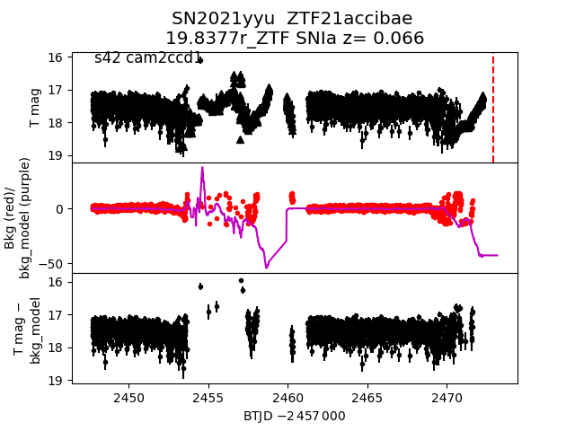 2021yyc 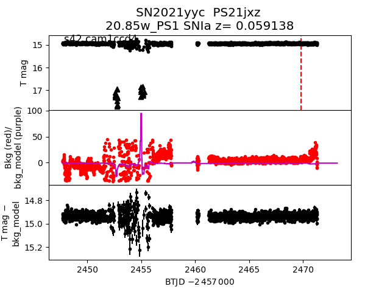 2021yaj 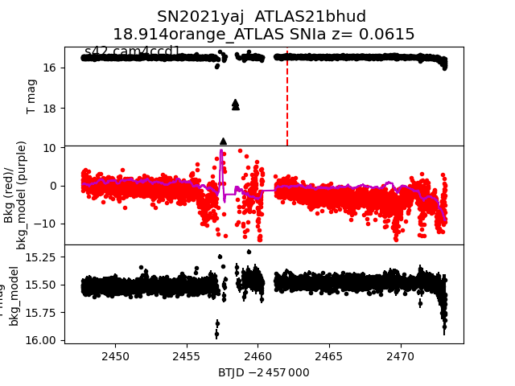 2021ybw 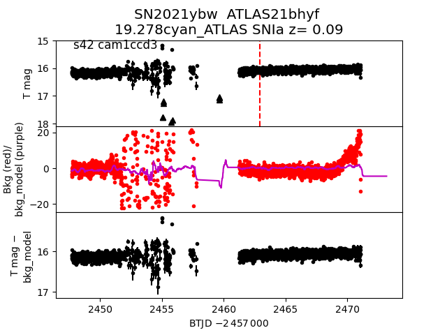 2021yyy 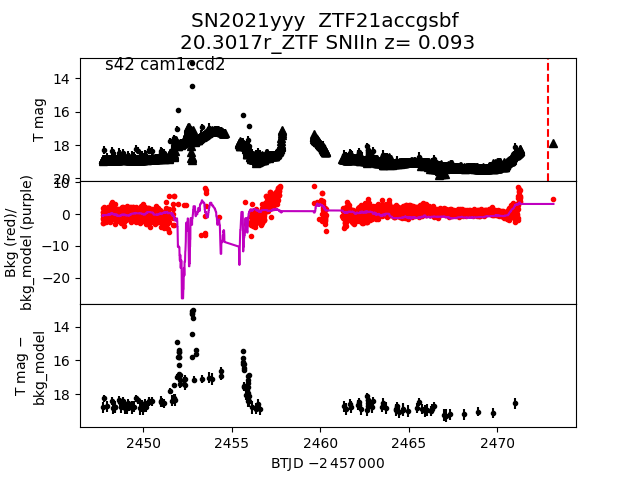 2021wly 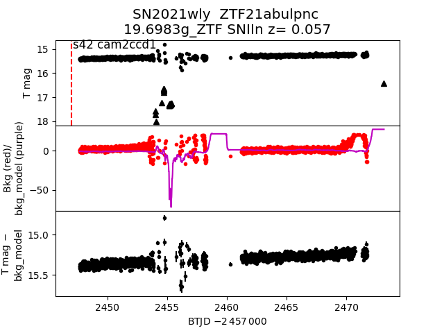 2021yik 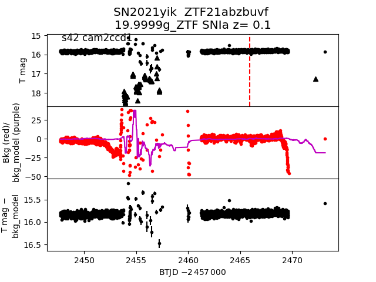 2021xoi 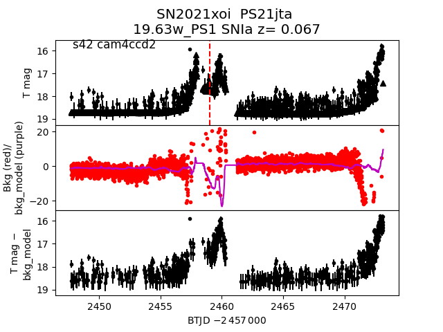 2021yke 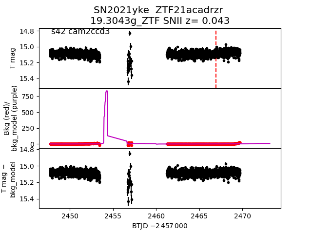 2021yly 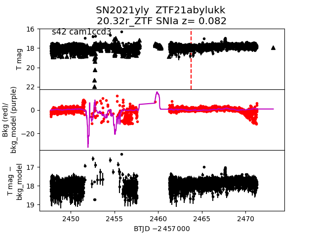 2021yaz 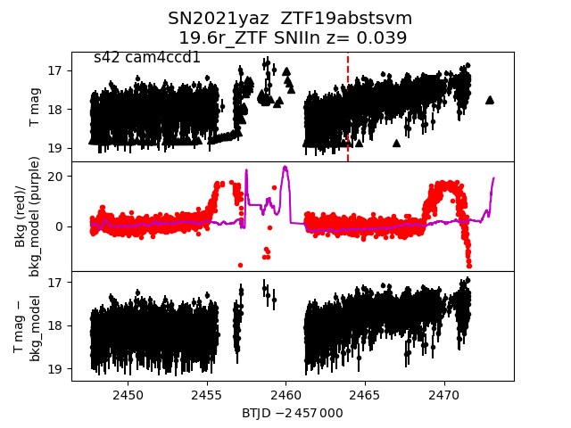 2021xhj 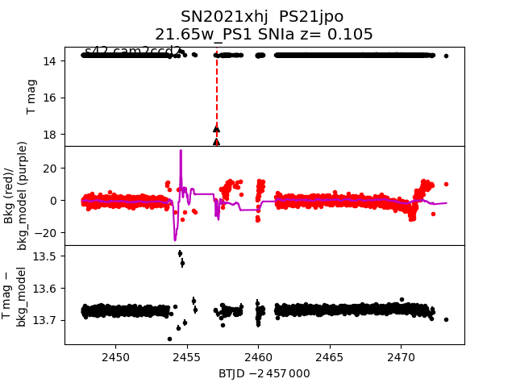 2021ydb 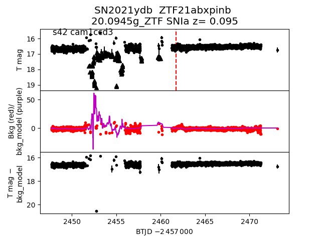 2021xzl 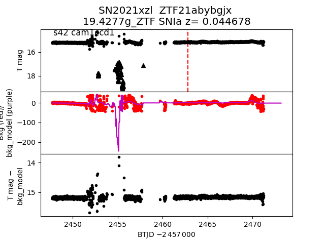 2021xes 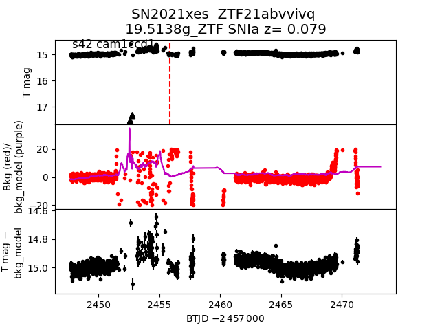 2021xan 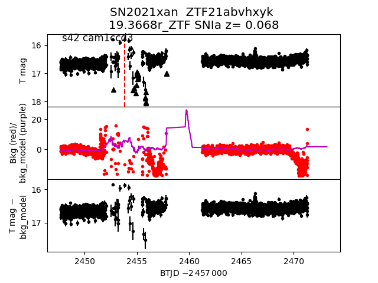 2021xoh 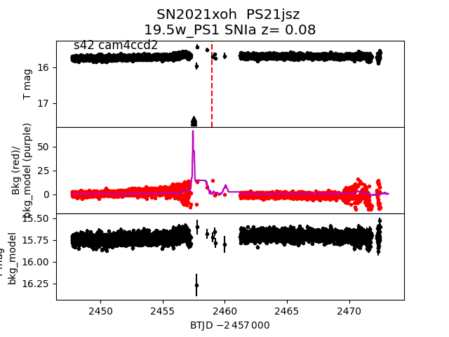 2021wzo 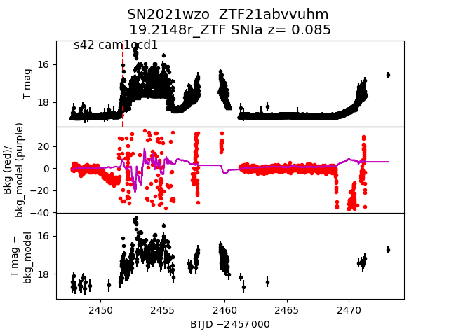 2021xxz 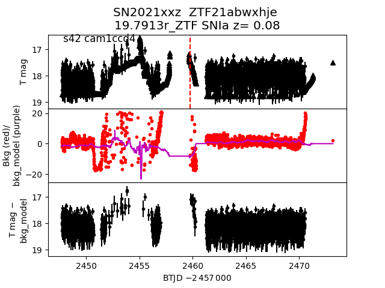 2021ylm 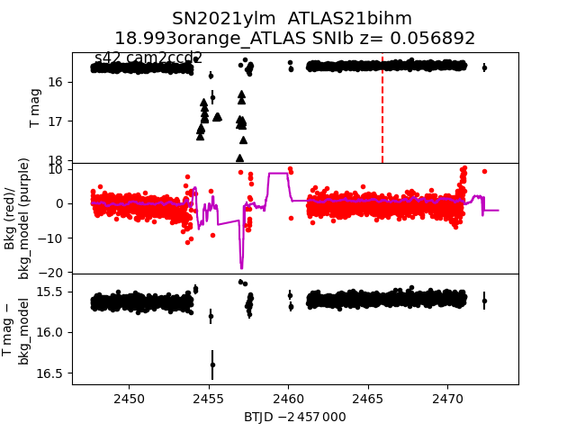 2021xbb 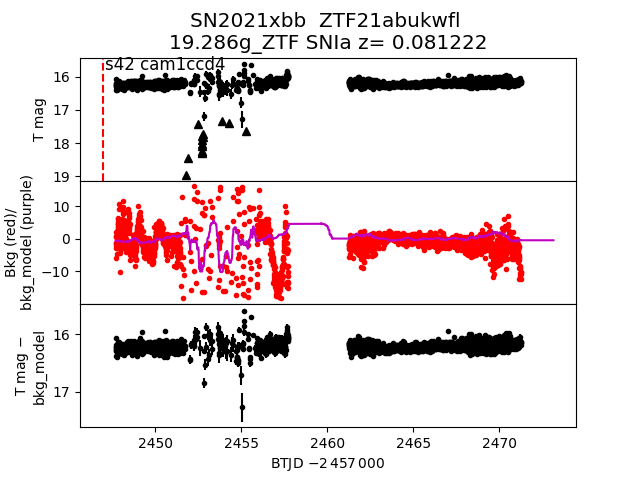 2021xuj 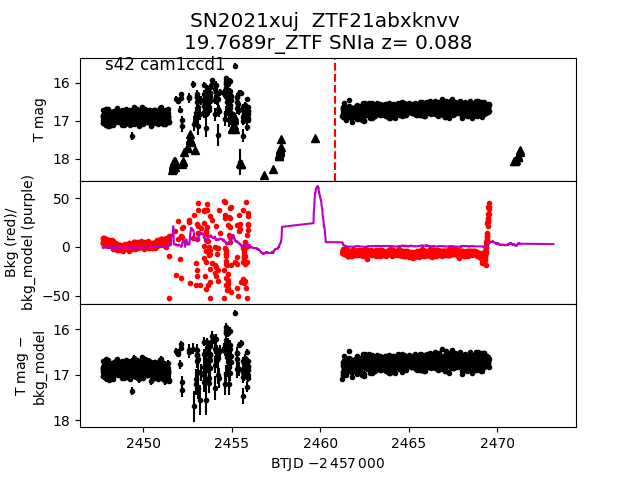 2021xte 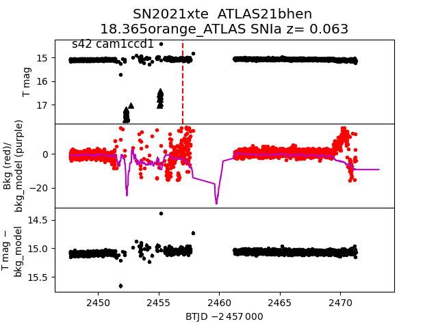 2021ycy 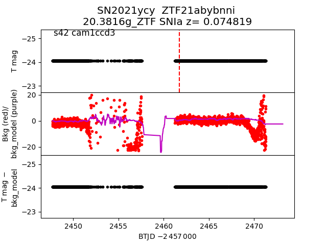 2021xvg 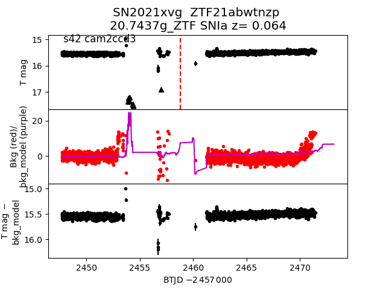 2021ysn 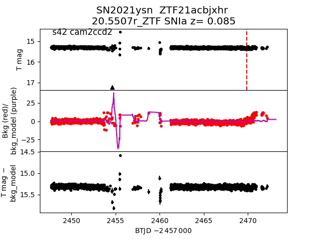